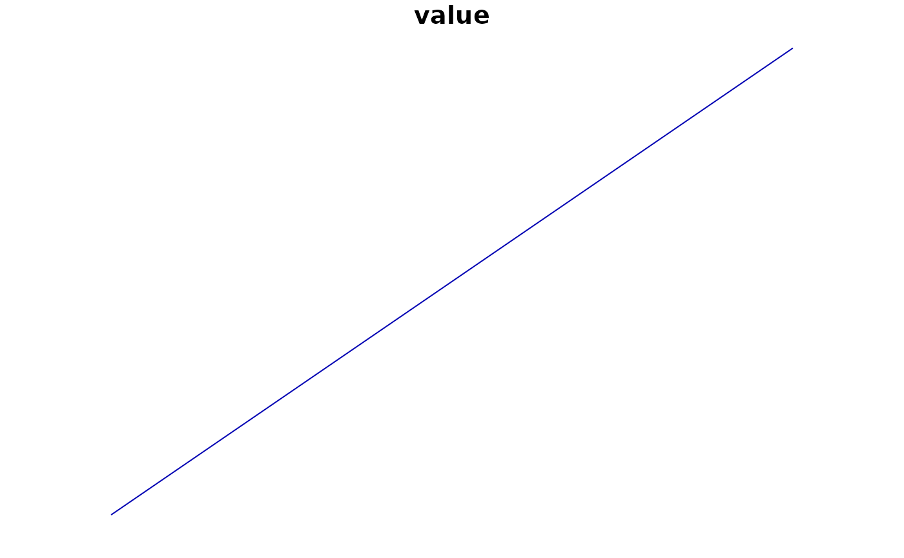

flow_lines() creates sf line geometries joining origin and destination
locations. Lines can be straight or curved trajectories.
Usage
flow_lines(
flows,
locations,
from,
to,
value = NULL,
id,
group = NULL,
lon = NULL,
lat = NULL,
input_crs = 4326,
crs = NULL,
drop_self = TRUE,
flow_curvature = 0,
flow_n = 30
)Arguments
- flows
A data frame containing origin-destination pairs.
- locations
A data frame or
sfobject containing one or more rows per location. Repeated locations are reduced to the first geometry perid.- from, to
Unquoted columns in
flowsidentifying origin and destination ids.- value
Optional unquoted numeric column in
flowsused as flow value. If omitted, each flow receives value 1.- id
Unquoted location id column in
locations.- group
Optional unquoted column in
flowsused to group or colour flow lines.- lon, lat
Unquoted longitude and latitude columns in
locations. Required whenlocationsis not ansfobject.- input_crs
Coordinate reference system for
lonandlat, or for ansfobject with missing CRS. Defaults to EPSG:4326.- crs
Target projected CRS. If
NULL, a projected CRS is selected fromlocationsor an estimated UTM zone.- drop_self
Should self-flows be removed?
- flow_curvature
Numeric curvature for trajectory lines. Use
0for straight lines, positive values for one bend direction, and negative values for the opposite direction.- flow_n
Number of points used to approximate each curved trajectory.
Examples
locations <- data.frame(
place = c("A", "B"),
lon = c(-71.3, -71.1),
lat = c(46.75, 46.85)
)
flows <- data.frame(from = "A", to = "B", trips = 15)
lines <- flow_lines(
flows,
locations,
from,
to,
trips,
place,
lon = lon,
lat = lat
)
plot(lines["value"])
